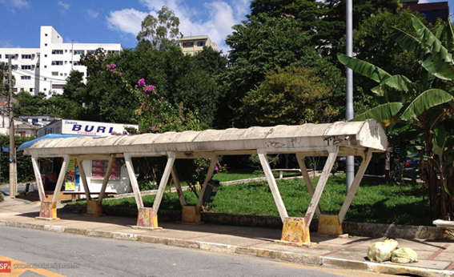
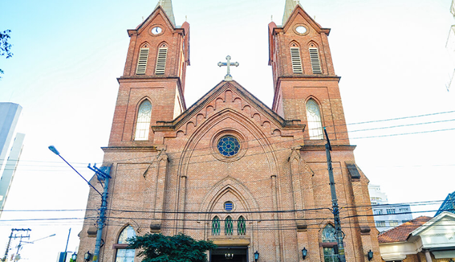

Bairro da Lapa
Um pouco sobre:
Lapa é um bairro do município de São Paulo pertencente ao distrito da Lapa. Conhecida por seus grandes estabelecimentos comerciais como o Mercado Municipal da Lapa e o Shopping Center Lapa, além de suas grandes casas e prédios, a Lapa possui 58.924 habitantes e um IDH de 0,941, o 11°maior dos distritos de São Paulo.
Localização:
A Lapa é localizado na Zona Oeste de São Paulo, é atendido pelas linhas 7 - Rubi e 8 - Diamante da CPTM. Entre as principais vias de acesso estão a Avenida Heitor Penteado e as Ruas Clélia, Cerro Corá, Guaicurus, Coriolano, Tito e Pio XI.
Origens:
As origens da Lapa remontam aos primórdios do povoamento de São Paulo de Piratininga. A primeira notícia sobre a região é de 1581, quando os jesuítas receberam uma sesmaria junto ao Rio Emboaçava, depois chamado Pinheiros
